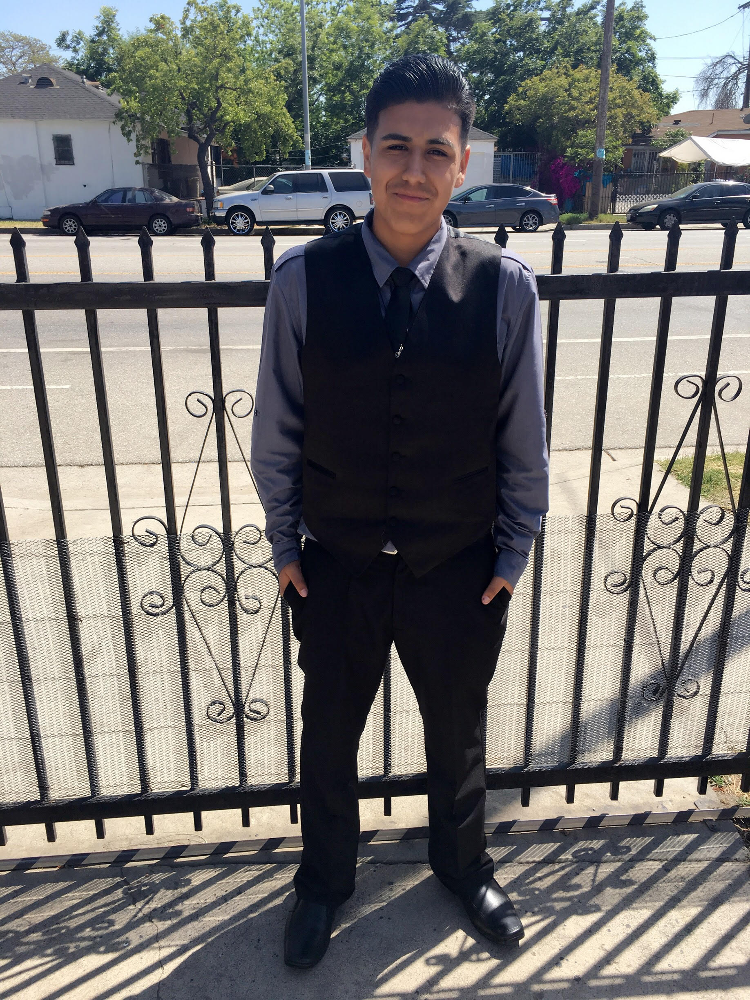

Rafael Carrillo

My Three Hobbies
My first main hobby that I love to do is practice Basketball. In my school Orthopeadic Hospital Medical Magnet High School, there is very little space for sports.
The only space we have for extracurricular activities are for volleyball and basketball. I was never really interested in basketball until I reached High School.
I began to love the sport and the way it works. I have been practicing for two years now and I love to play on my free time. It eases my mind and helps me relax.
I am currently in the school team, so I play in what I love. My best skill is shooting three pointers, many of my friends and teammates know me for that.
This hobby is something I choose to do and I really grew fond of it.
My second hobby I enjoy doing a lot is drawing. I am a lefty and many consider that lefties are born with creativity.
I enjoy to draw when I have free time, I feel really calm and when I'm done with my drawing, I feel accomplished. I can draw from realistic to animation, not perfectly though.
My preference to drawing is animation. I love seeing anime and I enjoy drawing the characters from scratch. It gives me a thrill when people compliment my work.
The most complex drawing I have ever done would be from a photo I took of a girl. Drawing is my second favorite hobby I love to do and love to practice.
My third hobby that I love to do is watching all different genres of movies. My sister owns a lot of movies and I love to binge watch all types of movies and see the different type of acting they use.
I personally like seeing horror movies because they give me a thrill watching them. Whenever I have free time at home I put on a movie and just sit back and enjoy it. I constantly do this when I have the time. Watching movies really help me relax and release stress that I have built up. I feel eased and I have no worries as I watch the movie.
100 problems in my community
- -Air Pollution
- -Homeless Population
- -Air Pollution
- -Homeless Population
- Anxiety
- Depression
- -Teen suicide
- High Blood Pressure
- -Obesity
- -Garbage in Streets/Ocean
- -Teenage Pregnancy
- -Teenage Drinkers
- -Racism
- Women's Right
- -No Equal Wages
- -Diseases
- -HIV AIDS
- -Cancer
- -Breast Cancer
- -Drug intoxication
- -Lack of financial aid
- Police Brutality
- -Prejudice people
- Gangs
- -Rapists
- -Pedophiles
- -Immigrant injustice
- -Car Accidents
- -Gun violence
- -Global Warming
- Lack of Safe zones
- -Lack of healthy food
- Lack of trees
- -Poverty
- -Corrupted Governments
- -Smoking
- -Little Education
- Protests
- Fires
- -Pedestrian accidents
- -Graffiti
- -Diabetes type 2
- -Teens exposed to bad influences
- Houses in bad conditions
- -Stereotypes
- -Abortions
- -Little available professional help
- -Terrorists
- -Prostitution
- Black market
- Illegal merchandise
- -Sidewalks in bad conditions
- -Little advertising on health awareness
- -Drug Abuse
- -Child neglect
- -Violating speed limits
- Animal Abuse
- -High School Dropouts
- -University Dropouts
- Divorce
- -Infant death
- -Water drought
- -Alcoholism
- -Drug addiction
- -Kids addicted to phones
- -Minority encarcelation
- -Deportations
- Separation of families
- -Child Abuse
- Amber Alerts
- Hate towards LGBT members
- -Dangerous weapons
- -Skin cancer
- -Autism
- -Drive Bys with weapons
- -Heat strokes
- -Heart attacks
- -Drowning in pools
- -Strokes
- Lack of Samaritans
- -Safe parks
- -Exposition to Drugs
- -Lack of Proper education
- -Underage smoking
- -2nd hand smoke
- -Peer pressure to work rather than to study
- -Little resources such as libraries
- -Traffic
- -Road Rage
- -Drunk driving
- -Abusive Relationships
- -Illegal Gambling-90
- Infested houses for a lot of payment
- Low quality lunches at school
- -Unsafe transportation
- -Unsanitary trains
- -Long distance transportation
- Lack of community service from police
- Not enough community organizations to improve
- -Loitering
- Street animals
- -Street harassment
Websites